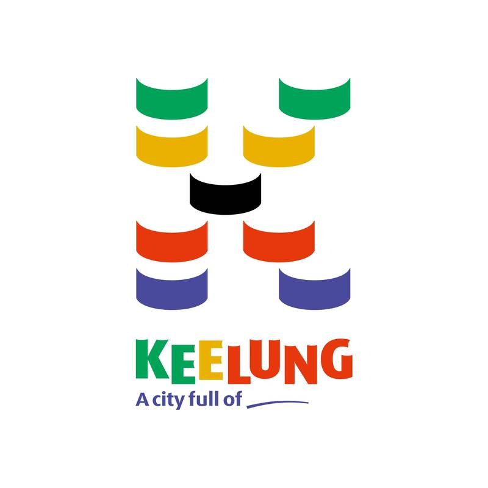
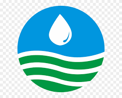
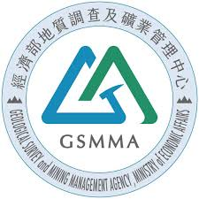
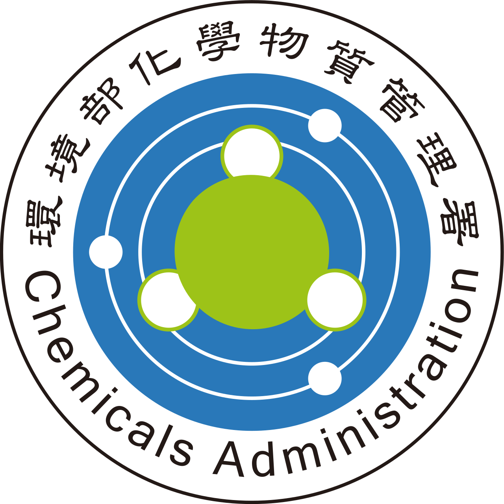
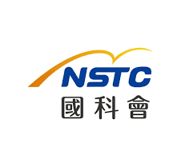

歷年專案經歷 Projects
共 16 項計畫 · 專案經驗總年資：7 年 4 個月軟體開發
基隆市道路邊坡維護管理制度建置暨巡查監測工作(第一期)
委託單位： 基隆市政府工務處
起迄時間： 2025/06 - 2026/06
專案簡述：
建置道路邊坡管理系統，以數位化手段提升邊坡治理效能並輔助防災決策。整合相關觀測與巡勘數據，提供多維度圖層展示、空間分析、自動化報表與資料目錄等核心功能，大幅提升查詢便利性與決策效率。
- 全程參與專案投標與規劃作業，協助團隊在多家知名工程顧問公司中脫穎而出，成功取得此專案。
- 規劃並主導資訊平台從 0 到 1 的全端建置，涵蓋系統架構設計與 UI/UX 介面規劃。
- 建置 PostgreSQL 關聯式資料庫，導入 SQLModel 進行 ORM 開發，優化資料庫操作與維護效率。
- 運用 FastAPI 框架開發高效能 RESTful API，實作資料 CRUD 操作、自動化報表產製及核心業務邏輯。
- 兼任專案經理，掌管開發進度、協調跨團隊資源與風險控管，確保系統如期高品質交付。
軟體開發
115年提升水災防災及淹水警戒整合精進
委託單位： 經濟部水利署
起迄時間： 2026/02 - 2026/12
專案簡述：
建置並優化淹水警戒及智慧防災展示模組，介接感測器、雷達雨量與細胞廣播等即時資料，將防災資訊視覺化。系統分析歷年績效並提供直觀的數據面板，輔助相關單位快速掌握災情，提升緊急應變與智慧防災決策效率。
- 擴充自動化 ETL 程式架構，介接開放政府資料 (Open Data)，確保即時數據同步與資料管線 (Pipeline) 穩定。
- 採用 PostgreSQL 與 SQLModel 進行資料庫設計與 ORM 管理，優化巨量水利資料存取效能。
- 運用 FastAPI 建置後端 RESTful API，負責系統核心邏輯運算與即時災防數據傳輸。
- 擴充及優化 Plotly 互動式數據儀表板，提供更直觀的淹水警戒及歷史分析操作體驗。
軟體開發
115 年度水利局工程管理系統維護及功能開發
委託單位： 臺南市政府水利局
起迄時間： 2026/02 - 2026/12
專案簡述：
負責工程管理系統之軟硬體維護與新功能擴充，維持系統穩定運行。協助管理單位進行系統操作諮詢、教育訓練與專案進度追蹤，確保工程管理流程數位化之效益最大化。
- 執行跨部門溝通與專案管理，追蹤維護進度並提供技術諮詢服務。
- 主導系統使用者教育訓練規劃，編定課程內容並擔任培訓講師。
軟體開發
全臺土壤液化淺層地下水位動態模式精進評估
委託單位： 經濟部地質調查及礦業管理中心
起迄時間： 2025/04 - 2026/12，共三年期
專案簡述：
建置地下水位及土壤液化動態分析整合展示平台。系統涵蓋空間圖資與時序資料（如地下水分區、即時預測及三維水文地質架構）。提供多維度輔助分析功能（自定義剖面繪製、時序水位預測等），並開發 API
供應用程式介接，強化液化分析之決策支援能力。
- 負責專案管理、技術諮詢與各階段報告彙整。
- 輔助系統 UI/UX 設計與新功能規劃（如輔助圖層切換與土壤液化潛勢圖展示）。
- 編寫完整系統操作手冊與審查會議技術簡報，協助確保計畫服務品質。
軟體開發
污水下水道電腦輔助操作管理系統資安及新增架構建置
委託單位： 臺北市政府衛工處
起迄時間： 2024/01 - 2026/04
專案簡述：
藉由即時監視資訊整合，建置預警防災系統以供中控中心應變運用。系統具備事件管理、統計分析、警訊通知及水情綜合展示等功能。同時落實系統資安防護規範，執行源碼掃描與弱點掃描，排解高風險項目以確保資訊環境安全。
- 落實資通安全管理，定期參與內部資安會議及稽核檢查。
- 執行系統資安掃描作業，包含源碼掃描 (SonarQube)、弱點掃描 (OpenVAS) 及壓力測試 (JMeter)。
- 彙整資安檢測成果報告，並提出對應之系統改善與安全防護修補方案。
軟體開發
114年度水利局工程管理系統維護及功能開發
委託單位： 臺南市政府水利局
起迄時間： 2025/05 - 2025/12
專案簡述：
執行工程管理系統軟硬體維護並針對使用者需求擴充系統管理功能，確保系統高效運作。同時提供前線技術諮詢與專責管理支援，鞏固客戶數位系統操作體驗。
- 負責專案管理與進度追蹤，並提供即時專屬技術客服支援。
- 規劃並擔任教育訓練講師，帶領多梯次課程提升使用者系統熟悉度。
- 撰寫各階段專案報告與審查簡報，確保計畫成果如實交付。
軟體開發
114年提升水災防災及淹水警戒整合精進
委託單位： 經濟部水利署
起迄時間： 2025/03 - 2025/12
專案簡述：
建置淹水警戒及智慧防災展示功能模組，系統性彙整並視覺化水災防救災數據。透過整合多源基礎資訊與儀表板加值應用，使系統能提供直觀連貫的即時災情數據，輔助相關單位應變決策並提升整體數位防災服務效益。
- 開發並維護自動化 ETL 流程，介接並同步外部公開環境監測資料。
- 規劃 PostgreSQL 資料庫系統，負責資料表結構建置與效能優化。
- 採用 FastAPI 框架開發後端 RESTful API 處理核心業務邏輯及資料串接。
- 整合 Pandas 與 QGIS 空間分析，並運用 Plotly 建立互動式數據儀表板，進行多維水利資料視覺化。
- 彙整資訊系統開發成果與技術指標，協助確保專案各階段目標達成。
數據分析
蒐集再生能源運轉維護程序與風險合適性評估
委託單位： 工業技術研究院
起迄時間： 2025/03 - 2025/04
專案簡述：
針對離岸風力發電機組之監控數據、警報與維護紀錄進行蒐集及清洗。建立資料庫標準化結構，並藉由相關性分析與視覺化，建構機組故障風險預測模式與營運效能指標，作為長期維護與極端運轉情境模擬之基礎。
- 執行離岸風電運轉資料蒐集與清洗（含 SCADA 監測、警報資料、運轉紀錄），提升分析資料標準化品質。
- 計算具代表性之營運指標（如發電實際可用率），並進行視覺化展示（如屬性堆疊圖、功率曲線及時序圖）。
- 建構設備故障風險模型，透過停機事件前之歷史數據與警報參數進行相關性分析，預測潛在風險趨勢。
- 負責專案報告撰寫與審查簡報製作，確保計畫研究成果獲外部專家認可。
軟體開發
113年度水利局工程管理系統維護及功能開發
委託單位： 臺南市政府水利局
起迄時間： 2024/03 - 2024/12
專案簡述：
維持工程管理系統穩定運作並因應長官與使用者需求開發擴充功能。負責對內外之專案進度追蹤、報告編撰及使用者技術諮詢與教育訓練。
- 掌管專案推動時程，定期追蹤維護進度並提供顧問諮詢。
- 撰寫各階段（期中、期末）專案報告，並負責整備審查簡報與回覆委員意見書。
- 主辦系統教育訓練課程規劃，並擔任專任講師以提升系統推廣成效。
數據分析
蒐集再生能源發電效能與運轉風險作法
委託單位： 工業技術研究院
起迄時間： 2024/04 - 2024/12
專案簡述：
蒐集與處理風力發電設備之運轉監控與維護紀錄，透過量化分析探討運轉模式與發電效能之關聯。並結合故障事件數據，評估零組件運轉風險，運用程式套件計算損壞機率，建立風險評估與極端情境模擬技術。
- 處理並清洗風力機組監控數據及維護事件報告，確保歷史數據具備分析價值。
- 執行發電性能比對分析，並將多部機組之發電效率及比例分佈進行客製化資料視覺化呈現。
- 蒐集歸納零組件運轉風險與影響因子，建置故障樹狀圖並代入參數計算事件發生機率，產出風險評估報告。
數據分析
尖端地層下陷防治技術整合研究
委託單位： 國立中央大學
起迄時間： 2024/04 - 2024/09
專案簡述：
整合沉陷量、岩性、地下水位與降雨量等多維度地層監測資料。透過資料清洗與機器學習技術，分析水文環境變數與地層擠壓的關聯性，進而推估並預測中南部觀測點位之沉陷變化情形。
- 執行巨量空間監測資料清洗（含沉陷量、岩性、降雨量與 GPS 高程），確保格式一致性並排除勘誤。
- 開發資料檢核邏輯，進行地下水位觀測資料之異常值偵測與缺值自動補遺。
- 導入機器學習演算法，推估磁環監測井於缺乏觀測時段之分層沉陷變動情形。
- 積極與學術界專家合作，參與學術研討交流，將研究洞見回饋至分析模型中。
軟體開發
土壤液化淺層地下水位動態模式評估分析
委託單位： 經濟部地質調查及礦業管理中心
起迄時間： 2023/04 - 2024/12，共二年期
專案簡述：
建置網路資源整合平台，匯聚淺層三維水文地質架構與地下水位推估成果。提供自定義剖面繪製、水雨量交叉比對、時序結果圖表預覽下載等資料分析功能，並開放 API 供外部介接應用。
- 統整並清洗自計式及人工觀測地下水位資料，完成自動化異常值偵測及數據補遺機制。
- 建立視覺化圖表產製模組，將繁雜之水位數據轉換成清晰易讀的時序折線圖。
- 籌辦多場工作研商會議，負責各階段專案報告編撰、審查簡報製作並確實回覆專業委員意見。
數據分析
再生能源設備發電運轉數據蒐集及預測分析
委託單位： 工業技術研究院
起迄時間： 2023/08 - 2023/12
專案簡述：
運用概率風險評估 (PRA) 框架檢視風力發電機組之運行健康狀態。結合定性關聯與定量數據分析建立系統邏輯脈絡，並加入時間與環境影響變數，建構大型風電系統之動態故障預測與風險分析模型。
- 回顧相關國際標準文獻，定義風力發電設備系統資料完整性檢核規範，強化故障分析架構。
- 執行 SCADA 監測大數據清理，建立機組訊號有效性驗證與敏感雜訊汰除流程。
- 劃分風力機生命週期並分類核心子系統（如葉片、傳動鏈、電力與水下基礎），建立細部故障事件關聯庫。
- 整合歷史機率模型與數學疊加演算，加入環境影響因子，進行系統級別之動態風險機率模擬。
- 將系統事件機率演算成果進行可視化，並籌辦專家諮詢會議探討改善對策。
研究計畫
建立我國利用風險分析作為化學物質管理決策工具之前期規劃專案工作計畫
委託單位： 環保署化學物質管理局
起迄時間： 2020/06 - 2021/01
專案簡述：
探討計算毒理學 (Computational Toxicology) 與電腦演算模型 (in-silico methods)
於化學物質管理決策之應用，研擬以數據驅動取代傳統活體實驗之可行性。彙整國際管制規範並連結國內政策框架，建立自動化物質篩選評估機制，作為後續化學物質管制管理之政策依據。
- 廣泛回顧 40 餘篇國際權威文獻，彙整歐盟與美國化學品分類架構，研擬適用於國內之物質篩選建議。
- 評估並測試機器學習與資料探勘技術，推動化學物質毒性自動化判別與快速分類。
- 統籌召開 4 場跨領域專家會議（涵蓋毒理、食安、環工及社會科學領域），廣泛蒐集意見以完善決策框架。
- 協同團隊撰寫高完整度之研究成果報告，並具體獲環保機構官方網站引用公開發表。
化學分析
發展同時定量分析尿液中多種硫醚尿酸類鍵結物作為多種致癌揮發性有機物之暴露指標
委託單位： 國家科學及技術委員會
起迄時間： 2018/09 - 2019/08
專案簡述：
針對環境中易引發致癌風險之揮發性有機物 (cVOCs)，設計並建立多種生物指標 (Biomarkers)
質譜定量分析方法。探討有機物代謝進入人體防禦機制之循環路徑，透過化學檢測結合生物監測運算模型，釐清化學暴露與健康風險間的因果關聯，為後續流行病學研究奠定實驗基礎。
- 梳理 40 餘篇化學分析與毒理學前沿文獻，成功建立能夠同時定量 20 種 VOCs 標記物的高階檢測程序 (UPLC-MS/MS)。
- 撰寫國科會計畫期中期末成果報告，建構多指標生物監測數學模型 (Biomonitoring Computational Model)。
- 全英文直接指導 2 位外籍實習生，落實實驗室化學分析操作與實驗數據處理等學術傳承。
化學分析
白花蛇舌草與蕾莎瓦混合服用在大鼠體內的藥代動力學與藥效學研究
委託單位： 國立陽明大學
起迄時間： 2016/09 - 2017/07
專案簡述：
設計實驗動物模型與高階化學分析途徑，探索特定中草藥萃取物作為標靶藥物 (Sorafenib) 輔助療法的可行性。研究重點在於評估合併用藥在生物體內之藥物動力學 (Pharmacokinetics)
及其對緩解肝臟發炎症狀之臨床效用，確保該藥物組合之吸收效率與潛在安全性。
- 爬梳 20 餘篇跨國藥物動力學文獻，導入探索式資料分析 (EDA) 初步評估數據，並跨院所偕同臨床醫師共同規劃實驗設計。
- 落實規模化活體動物實驗，結合層析檢驗 (HPLC-UV) 產出量化數據，利用 WinNonlin 模型演算關鍵藥動學參數 (AUC、半衰期等)。
- 統整複雜之實驗數據撰寫成高影響力之中英文技術論文，其成果獲國際科學期刊 ACS Omega 接受並刊登。
合作單位 Cooperating Units




